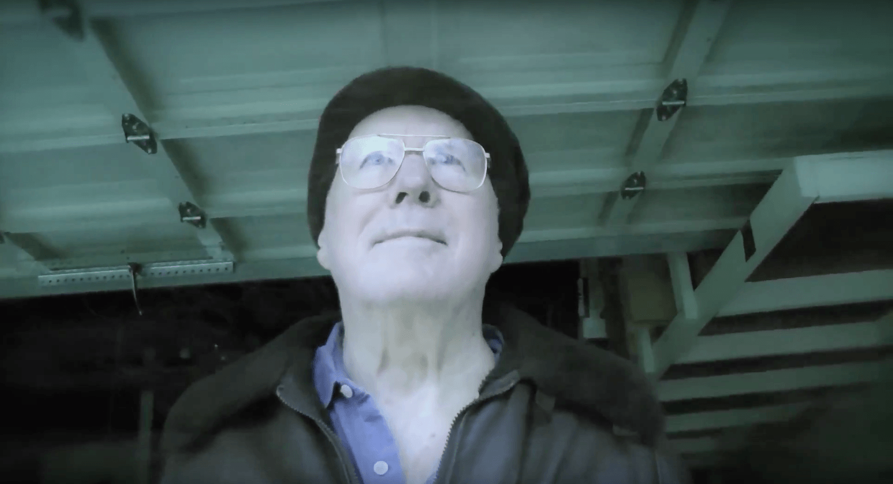
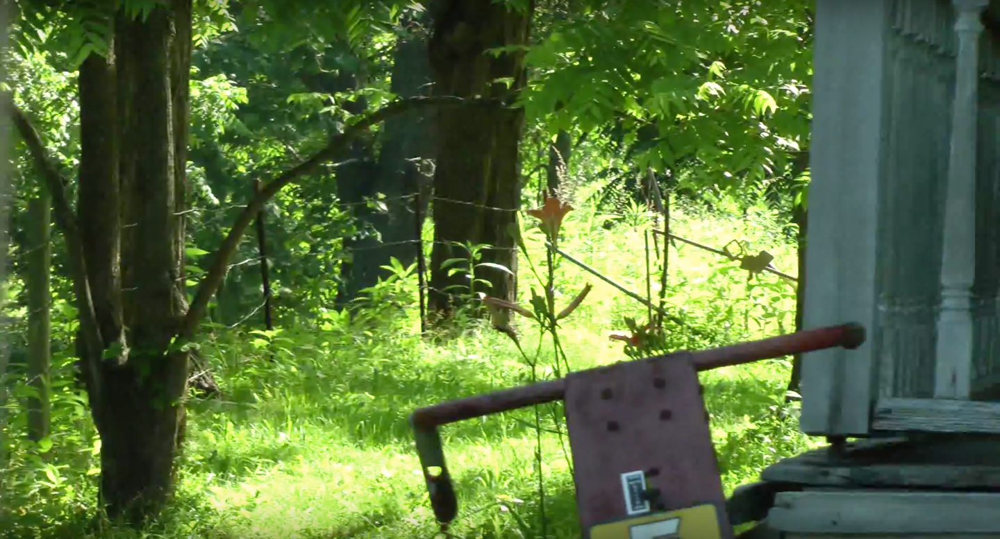
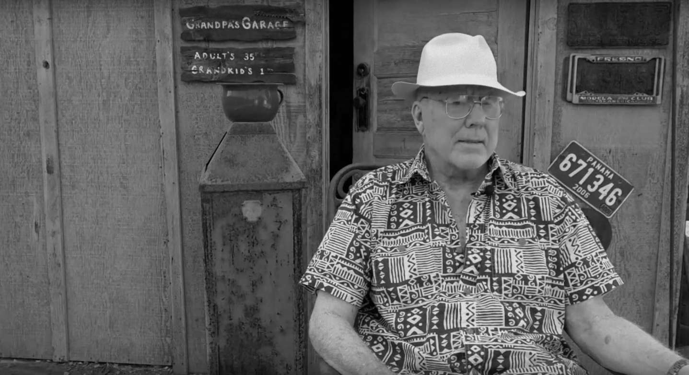

VIDEOS
-

Blowing Leaves
They never stood a chance.
-

If Only I Was A Boy Again
A short story by Tulsa, read by Tom.
-

Papa
Stories from the man himself.
Memorial Comments
Lee Porter says...
One of the first things I remember, is the first time I meet the "COACH", Lori and I were all over each other (we still are) we would meet in town at night. Pretty sure he was not happy about us sneaking around. Lori was leaving Cambria to come back Hawaii with Kelly, as she was leaving she let me know that dad would like to meet me. So here I am by myself and I'm going to meet Lori's dad at the Sea Chest. I remember it like it was yesterday. He was not intimidating ,but as a mater a fact as he could be, the first thing out of his mouth was I would like to know what are your intentions are with my daughter! After my explanation, he was a teddy bear. WE were the best of friends . He was my second father and I will miss him dearly. LOVE YOU COACH Lee
Carey says...
I had the honor of growing up two doors down from the Phillips'. Thus, I have so many wonderful memories of Mr. Phillips. The photo of the catamaran brought back some of those memories of sailing with Julie and Mr. Phillips. The old car, the workshop in the backyard, the playhouse, and so much more. His smile was always ready. As I grew up, married, and had children, he would always ask about my children, and he even seemed to approve of Maurice :) You will be missed, but you will always be remembered by all whose lives you've touched through teaching, coaching, and more.
DeeDee says...
What a beautiful collection of vintage pictures and memories of Tom. To listen to his voice talking in the videos brings a tear to my eye, like he is seating right beside me sharing his story. Since we only knew Tom for a relatively short time in his long and fulfilling life we heard many of his Tom-isms. You have all done a superb job in preserving his spirit and memory. We will surely miss him.
Brooks Wilson says...
Wow! What a wonderful tribute to a wonderful man. So many memories and stories come to mind. I first met Coach in about 1957 when he took over swim coach responsibilities for the Fresno Dolphins. I was basically a good kid, but I always pushed authority until it pushed back. I was in the principle's office at least once a week during elementary school days. My first practice saw me challenging his authority. The pool we used was at Fresno High. It was an outdoor, heated pool and created lots of steam in the winter. I would swim out to the center of the pool and goof off in the fog. Coach caught me and had me swim 20 extra laps after practice. After practice, he spent some time pointing out the error of my ways, shall we say. From then on, I was a Coach Phillips' swimmer, true and blue. We both ended up at Bullard High where there were some of the best swimmers in the US. Bullard won nine Valley Championships in a row by the time I had graduated. Coach just had a no nonsense approach to coaching and did it with style, humor and grace. He was also very humble about his coaching, but you don't get swim teams like we had without some high measure of competency. During my sophomore year, he decided to award me Most Improved Swimmer for the year. He asked my mother, Nell Wilson, a timer for all our swim meets who absolutely adored Tom, if my dad would be there at the awards banquet. She said "no," and Tom said, "then I'll be Brooks' dad." So, Coach was always a dad to me and probably many others. I usually walked home from school, but would always be hopeful that Coach would pick me up in his old Model A Ford. I loved riding with my hero in that car! Later in life I became a career Marine Corps officer. When in Vietnam, I was wounded and spent almost a month on a hospital ship. My parents and I wrote back and forth a lot and used a tape player to also send voice messages to each other. My mother had Tom come over and record words of encouragement to me on one tape, which I still have. Later, home on leave, I visited Coach at Hoover High and he asked me to wear my uniform. He thought he was being sneaky, but would tell me to walk with him around campus while he "checked on some things." He was showing me off as someone he cared about to his students. He then took me over to a restaurant for lunch and told me that he wanted me to call him "Tom" rather than "Coach." That was very hard for me to do since he had always been my coach, but I tried to respect for his wishes since I had the utmost respect for him. I saw him a few times over the years. My wife and I had Marilyn and him over for dinner one evening along with Bob Mathias and his wife [Tom, Marilyn and Bob had grown up together in Tulare]. What a nice evening that was for all of us. I always sent Coach a birthday card and a Christmas letter so that he would know that I had not gone to jail or pushed authority somewhere overly much. Coach was truly a wonderful man and mentor. One of three men who would make a huge difference in the way I turned out. I loved him more than I did my own father. I regret not having seen him these past few years, but I always recognized that, though he loved his students, he was a very private person and focused all his energy on his family. I tried to respect that, yet keep in touch through cards or letters a couple of times a year. I send my most heartfelt condolences to Marilyn and family. I hope that life will give you grace in confronting the future without Tom. Tom broke the mold when he was made. I have never met another like him. I shall treasure the many memories of him until my time comes. Hopefully, our paths will cross again. As Marines say, "Semper Fidelis [Always Faithful]."
Caroline Yacoe says...
Aloha All, What a wonderful life for a wonderful man. I especially liked his "Wish I were a young boy again video" Remember the good times is the best advice I have to all his family.
Jack Phillips says...
Childhood Memories of My Brother Tommy Note: These memories are seventy years old and the details may not be exactly accurate, but the feelings involved are as fresh and strong as yesterday. I was the baby of the family. I had three older brothers, each one with a bundle of childhood memories wrapped around them. Jay, the eldest, lived on a different planet. As a child, I recognized and came to accept that I could never reach the exalted atmosphere in which he existed. By the time I was even looking at a baseball, he had won the Tulare Union High School Outstanding Athlete of the School in his sophomore year! By the time I was eight he was off to college on a sports scholarship and went on with his glamorous life including the marriage to a Poly Royal princess. Jerry, the closest to me in age, was the hard, disciplined, teeth-clinched boy-man of reason. He was somewhat distant. He wasn’t much for socializing, and I was grateful beyond words when one time he stooped so low as to sit down and tell me the story of “The Monkey’s Paw” he had read for his English class. But then there was Tommy in the middle. As a child I think I liked and feared him the most. He was all raw feelings. He had very broad shoulders, both anatomically and emotionally. He was sentimental and caring in a tough macho household that did not particularly value those qualities. In spite of the fact that I was obviously the golden apple of my mother’s eye, out of her ken, but only out of her protective observance, I could be the brunt of some brotherly teasing, mostly about my pudgy and decidedly un-athletic body. On those occasions when the cut was too deep and I was all pouty and teary, it was Tommy who felt my pain and would come by, pat me on the head, and tell me that things would be OK. Reason enough to love him all through my childhood. But Tommy could also be fearsome and temperamental. He put a fist through the kitchen wall one time in a fit of anger at biting down on a sore tooth. He could could be mouthy and subordinate, once, disappointed in not getting the family car, using a profanity to Mom that made her cry. And you really didn’t want to go near him when he was in pain recovering from his knee operation lest you have some pretty ugly words thrown your way. His hospital bed was set up in the dining room. I avoided that room. Tommy could be daring, challenging the rules of the house. He once came back from the barber with a mohawk haircut . . .not to Tulsa’s liking. He was told by my father to go back to the barber and have the rest cut off if he wanted to sit at the table that night for dinner. Tommy was bald for a week and very shaggy for the next three. Tommy could be rascally, loving a good joke, and Mom was sometimes the target. Pop owned and raised hogs out of town, using Tulare High cafeteria wet garbage to feed them. Once a year the new hogs were castrated. The nasty looking results of this activity were a prime delicacy to Pop and a ghastly ordeal for Mom who hated the whole idea of preparing and cooking them for my father. Worse, if asked, she had to tell the older boys just what it was she was stirring in the fry-pan. . . “pigs nuts” she would answer through clenched teeth. I couldn’t have been more than three or four when Tommy, with a glint in his eye insisted I go ask Mom what she was cooking. Tugging at her apron, I asked what she was cooking. Whispering those two ugly words to her innocent little Jackie-boy nearly killed her. Tommy could be all tenderness and star-struck, especially when it came to speaking about Marilyn, the beautiful blonde up Center Street, with whom he was going steady. In fact, I know we brothers, perhaps in jealousy, gave him a hard time for being so in love. It was too “mushy” for our testosterone dominated home. Mom sometimes sent me up the street to the Eubank cottage to fetch Tommy for dinner. It was his habit to sprint to and from her house. I once asked him why he did that. He said, “Jackie-boy (which is what he usually called me to the last time he spoke to me), the day that I’m too old to dash to Marilyn’s house and back is the day I’m too old for anything.” At the time, I thought that was a really mushy declaration of undying love. . . . . . Last week, when I drove down to see Tom, which turned out to be for the last time, he looked up from his hospital bed at me with those blue eyes, a breathing contraption snaking down his throat. He couldn’t talk, so I held his hand and he held mine for a long time. And we said things from our hearts through our hands. With little squeezes and not saying a word, we shared memories of the old times at that little house on the corner of Center and Ventura Streets. And one of the things he told me was that he no longer could run to Marilyn’s house and back. Then he was gone, “faster than a cat could lick its ass with his tail up and his tongue out.” Jackie-Boy
Sharon Crowley says...
Tom (and Marilynn) were the kind of people that put you at ease right away. Coming from a family of men who like to tease and joke, I found Tom's personality to be like a big warm bear hug. After having met him for about an hour years ago, he asked me to give him a haircut. Not being a hairdresser and never having given anyone a haircut, I thought for sure he was joking. He was not. I thought he looked pretty dapper! Huh! You were truly a head of household and you raised a fine family. Of this you should be proud. Rest peacefully. My sympathies to the family who I care deeply for - especially that Lyndi girl.
Colleen Nichols and Gil Chavez says...
It was such a pleasure to get to know Tom when he came to Roseville to visit Julie and family. Our children were teenagers and Tom always spent a great deal of time talking with them. He was legitimately interested in their lives and they in kind enjoyed talking with Tom. Tom always had a big smile and people gathered around as he was a gifted conversationalist. His big presence will surely be missed. Great memories of a man who truly devoted his career to young people.
Michael Phillips says...
Too many stories...many of my Phillips relatives have that gift, or that burden. Did it all come from Tulsa? I believe it's buried deed within our DNA, perhaps benefiting from sitting in the shadows of Roan Mountain with no television, internet, or even a library of books; our diversion was talking and telling tales. When i first met Tom Phillips, I knew I had found the caretaker for tales from the past to the present to be pulled out as needed and rehashed on a series of porches, sitting rooms and on the banks of mountain rivers, both east and west. And when the stories ran low, we made our own. We built fires, hiked trails thru mountain laurel, had picnics and great outdoor suppers, fished and skipped stones and became the best of friends and cousins. How I will miss the knowing smile, laughing blue eyes, and all the stories... and thanks to all you who help keep his memory alive.
John Gray says...
You left out my favorite Tom-Ism. "Get your car off of my front lawn "Ass Eyes". When he found out that his son Grant routinely dropped me off at my house by parking on my front lawn he later apologized for raising his voice. He never apologized for calling me "Ass Eyes" though. I met Tom when I was in ninth grade and last saw to him a few moths ago. Throughout he was always consistent. A genuine good guy and a strong, ethical and caring man. He also did a great job of raising my best friend.
Dennis Schmidt says...
I had the privilege of knowing Tom for over 50 years. He was my high school teacher at Bullard but turned out to be a good friend. He always told me “just call me Tom”. He inspired me to be a better person and to succeed in life; and for that I will always be grateful. But mostly his example of being positive and having a kind and caring attitude towards others is how I will remember him. I feel very fortunate to have gotten to know him and will really miss him. Thank you Tom for honoring me with your friendship!
Neida Bangerter says...
So sorry I never got to meet you Mr. Phillips, but I've known Lori for a long time 29 years as one of my best friends. Kelly grew up little kid days with our children and Lee's intentions are still good with your daughter. My thoughts go out to the family for your loss.
Gary Mar says...
Tom was a great father not only to his own children but to all kids who knew him. He had a way to make every situation a learning moment. Whether it was critique of a swim stroke or the proper way to sand a piece of wood, Tom was there for me with advice and encouragement. A teacher, a father, a mentor, a friend--I will be forever grateful for having him in my life.
Gordon Paul says...
Tom was a great mentor and friend to me at Roosevelt high school in 1970 and 71. He helped save the boys swimming program by assisting Cal Sorenson coach the boys team. Tom was able to enthusiastically train, mentor and assist the Roosevelt swimmers achieve their goals. He was one of my favorite coaches. He had a no nonsense style of coaching that was just what we needed to have a successful year. I'm so sorry for your loss. God bless. Gordon Paul
Stuart Hayden says...
When they dedicated the BHS aquatic center, I missed the ceremony and getting to see Coach again. I swam on Dolphins 1959-1962, for Bullard 1966-1968 and worked for him at Hoover and Fresno High lifeguarding and teaching swimming for two years. Always Coach to me and he created a very special time in my life via swimming. I wasn't one of the stars but when you put 6 kids in each lane and we churned the water we were really a team. And mind you Boys and Girls teams swam together. Workouts almost always had breath catching breaks and Coach would somehow entertain us to where the whole pool was laughing. I do think anyone at BHS will remember his model A (Maroon with red pin stripes). Without swimming and his coaching, my high school experience would have been severely lacking. Hats off to Tom Phillips, and I sincerely hope some of my team mates will chime in too. Stu Hayden aka Strawberry to Coach and team mates.
Jim Coolidge says...
What wonderful tributes to a wonderful man. I had the pleasure of his company in many settings. Always true to form, always with a smile on his face. Tom always had the undying love for his family & lucky for me..... anyone they we associated with. This collection of thoughts, videos, and photos is not only touching, but proves that the apples did not fall far from their tree. I know he will be deeply missed, but he also was deeply loved. This love never passes. His touches, kindness and humor will always be in our hearts. Love to you Marilyn, remembering your big anniversary & Lori and Lee's wedding. Besos y Abrazos from Mexico.
jerry phillips says...
Tom was my older brother and I was always pleased when he turned his attention to me, as he did loudly one evening in a basketball game I was playing in at our alma mater, Tulare High. He yelled from the stands "soot the ball Jerry, shoot, shoot". After much encouragement I finally shot and missed but to this day, 60 plus years later, I am still warmed by the feelings of confidence and encouragement given to me that evening. ` Tom's love and concern for Marilyn was striking and admirable. He moved into husbandhood and fatherhood with grace and compassion He enjoyed his and was proud of their accomplishments. Beyond this, no one could compare with him in yard care, he was off the scale. ` He loved teaching and coaching and was top notch as validated by the many visits and compliments he received in later years from appreciative young people he worked with. I learned quite clearly what an exceptional swim coach he was from reviewing his teams' records. During his 12 year tenure as swim coach his teams were 1st in Valley 9 times,1st in Division 10times and first in Northern 11 times. No other sport at Bullard High (football, basketball, baseball or track) ever achieved this success before or since. ` The most memorable time I enjoyed with Tom was soon after our retirements and were looking for a new challenge. We soon found one parked in his workshop begging for attention- a model A which lay mostly in pieces. What was not already apart we took apart. We cleaned, fixed, replaced,modified and eventually put that sucker back together to Tom's unreasonably lofty expectations. It took a couple of years but it was a real cooperative achievement. I learned a lot from Tom during this project. ` An aspect of Tom's character was revealed when his father became older and frail. He would frequently drive to Tulare to help his father with yard care and other needed tasks around the house. This unselfish parental care seems to have been passed on to his children as the too have been there for their parents every need. ` As I look back and try to join in one of Tom's warmest moments, it would be to see his eyes sparkle anew and his lips slowly broaden into a confident smile when someone asked him about "the good ol' days" of teaching and coaching at Bullard High. Amen brother!
Kevin Marchese says...
Tom was always "Dad" to me, and this was significant because I lost my father when I was a kid; so I assumed that I would not utter that name, again. However, as things happen, Dad "adopted" me as his son-in-law after I asked him for Lyndi's hand in marriage. Lyndi and I were twenty-two. Dad showed me his unconditional love, and I understood that I had a been given a true second chance in his guidance and Dad-style mentorship. We shared a love for military aviation and other interests. When I became a father of two boys, Dad always had the right advice and perspective. Dad was always interested in the cases that I was working on, and he and Marilynn saw me through from law student to practicing lawyer. To make sure that I didn't get too far ahead of myself, Dad introduced me to upland hunting. I remember my first dove hunt with Dad and Grant by an orange grove; then, in later years, I recall his tall frame silhouetted against a golden field - wearing his cowboy hat and carrying his Remington 12-gauge - pheasant hunting -- an image I will not forget in its postcard perfection (balanced by the ribbing I would get if I missed a shot). It was during these times that I would hear his stories, or of hunting with his dad; of impossible shots and many of the anecdotes that have come to be known as "Tom-isms." At the house, Dad had a small bronze of a boy throwing a glider-plane. I knew that he enjoyed gazing at it and recalling the shear joy of throwing a plane in the wind to catch flight. Dad always made it a point to me to capture and celebrate simple delights. I have come to understand what a gift it is when you can share them with the ones you love. I hope to share these joys with my sons, as Dad expected. A better man I never knew. I am saddened that I won't have a reason to say "Dad" anymore, but I will be thinking about him. Dad. Kevin
Charles M. Stark says...
Dear Marilyn, Sorry to hear about the passing of your husband, Tom. He was a great regular guy. Tom and I started teaching together on our first educational job at Fowler High School in 1953. Tom and I would take on all comers in 2-2 basketball games; winning more than losing. After our games, he would invite me to your apartment for dinner. The dinners were always good because of you. If I remember correctly, Tom went to the opening of Bullard High School in 1955 with Wes Ault, our Principal at Fowler and Bullard. I went with Lloyd Leekt to Clovis High School. We met again 8 years later when I transferred to Bullard High to be with the basketball program. Tom was the swim coach and taught Industrial Arts in the classroom. At this time, one of his best friends was Ray Jensen. As the years went by, he became and Administrator at different High Schools and I went on to coach basketball at FCC. Each of us went our separate ways. I'll never forget the great memories with you and Tom. It was great - He and you were great to me in our first teaching jobs together. P.S. I always knew even back then that Tom was going to be a success in life. God bless you and your family, Charles M Stark 1142 E Everett Ave Fresno, CA. 93720
Mary and Robert Russell says...
We will always have a special place on our hearts for our wonderful friend and neighbor. It was our great fortune to get to know Tom and Marilyn when we moved into this neighborhood 5 years ago. My husband also knew Tom fom Hoover high school. He will be truely missed. Sincerely, Robert and Mary Russell
Gil Chavez, MD says...
I really enjoyed reading the postings about Tom's life. I got to know him personally a bit and he had a commanding presence and kind demeanor. I wanted to comment about one aspect of his life that merits to be said. I always think people's life needs to be seen through two lenses. One greatly referenced in the previous posts being how people lived their lives. The second one being what one leaves behind in this world. Well Tom did an excellent job in that Department in my view as measured by the great quality he instilled in his children. My wife and I have had the privilege of knowing Julie Randles-Phillips and her family for a long time. In Julie, Tom left a legacy of a strong minded, independent, caring, and extremely poised woman who chosed the best husband one could ever find in Kevin Randles and has raised two phenomenal children in Delaney and Sawyer. The Phillips-Randles make this world a better place. Well done Tom.
CHRISTOPHER BOUCEK says...
Dear Lori and Lee, My sincere condolences; having undergone the same experience so very recently I can honestly say I understand the pain of the new void in your world. In 1723 the architect Sir Christopher Wren died, and was entombed, at his request, in his masterpiece, St. Paul's Church in London. On his monument these words appear: "Si monumentum requiris circumspice" (If a monument is required, look around.) Not many men leave cathedrals, great works of art, or even pyramids as monuments. But all leave something. So I asked myself as I perused your website: What is Thomas Phillips's monument? The answer is very clear: Imagine all the relatives, friends and students his life has touched and made better. Imagine them gathered all in one place. Then, if a monument is required, look around. Cordially, CGB
Irwin Chow says...
Before there was a middle school in the Bullard Unified District, I attended BHS for the 7th, 9-12th grades. I did not swim for Coach Phillips, but as part of the Boy Scout Swimming merit badge, he helped me achieve the badge requirements by working with me in the old BHS pool as I had to jump in fully clothed and swim a lap or so. Just several months, my Pastor was talking about things that were accomplished in the industrial arts programs of his early 40-50's mid-west high school days, I thought of my time in metal shop and brought in several machine carved brass and steel polished plumb bobs and steel hammer. I had fond memories of the times under Tom Phillips guidance and his commanding voice and demeanor. Thank you Coach Phillips and bless you and your family. Irwin
Michele Davis says...
Tom Phillips was my vice principal when I attended Hoover High School with Lori. I remember him being unlike anyone I had ever met. On one hand, Tom seemed to have no sense of racial proprieties or boundaries. He said what he thought, with little regard for political correctness. At times we would talk and I would be aghast at some of the things he would say, like “you’re not 100% Black are you?” However, it also became apparent that he did not have one iota of malice intent behind his words. For him, it was simply a curious question. I grew not only to understand his authentic way of being, but also became charmed and fascinated by his manner of being. How could I let someone speak to me the way he would at times, and like him so much? Tom’s engaging character crossed racial and class lines as he knew no boundaries for connecting with his students. He made me laugh when I felt like I should be angry. I will forever be grateful to Tom for teaching me lessons that will live forever, in me and my classmates. Always give people the benefit of the doubt and reserve judgment. If you do, there may be real pearls of wisdom to be gained, if you remain open to the possibility.
James & Minda says...
To the Phillips family, we are so sorry for your loss. This was a beautiful and very moving tribute to a life that was rich in accomplishment, love, and family. The old photographs and the "Stories by Papa" video remind us that family is important and Tom expressed how proud he was of his. We felt lucky to have met him and enjoyed him and his wife Marilynn's company when they used to visit Honolulu.
Bob Hughes says...
Hi Phillips Family So sorry to hear about Mr. Phillips. I sure enjoyed knowing him and having him as a friend. My fondest memory was flying around South Central Alaska looking for bears and yes we found some. Love Bob Hughes Soldotna, Alaska
Alvena Loewen says...
Just heard of Tom's passing. Ken & I want to express our sympathy to you Marilyn and your family. It's never easy to loose someone you love. Tom had a special place in my life! He hired me as his secretary when I had not worked in over 10 years, staying home raising our boys so I was a bit rusty. We had a lot of fun working together at Hoover High! That job lasted 25 years for me, until I retired 14 years ago. Thank you for sharing him with me for some very enjoyable, memorable years! Blessings to you! Alvena Loewen